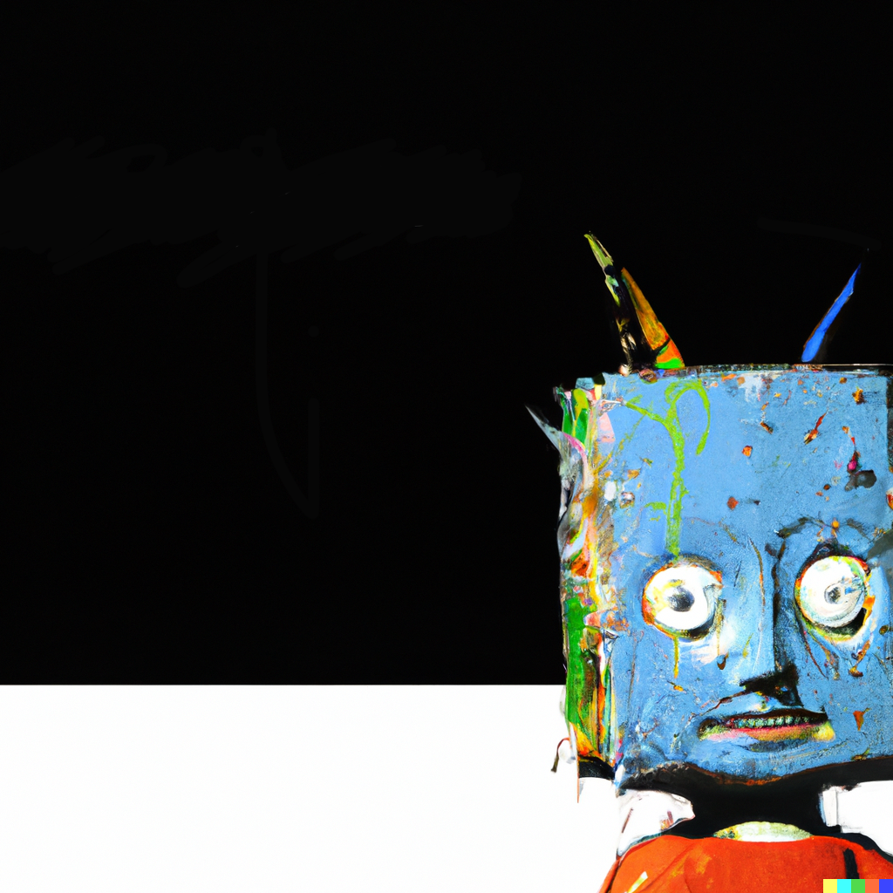

Click on the titles and watch them performed live by
Radiohead!
- 1. "Airbag" – 4:44
- 2. "Paranoid Android" – 6:23
- 3. "Subterranean Homesick Alien" – 4:27
- 4. "Exit Music (For a Film)" – 4:24
- 5. "Let Down" – 4:59
- 6. "Karma Police" – 4:21
- 7. "Fitter Happier" – 1:57
- 8. "Electioneering" – 3:50
- 9. "Climbing Up the Walls" – 4:45
- 10. "No Surprises" – 3:48
- 11. "Lucky" – 4:19
- 12. "The Tourist" – 5:24